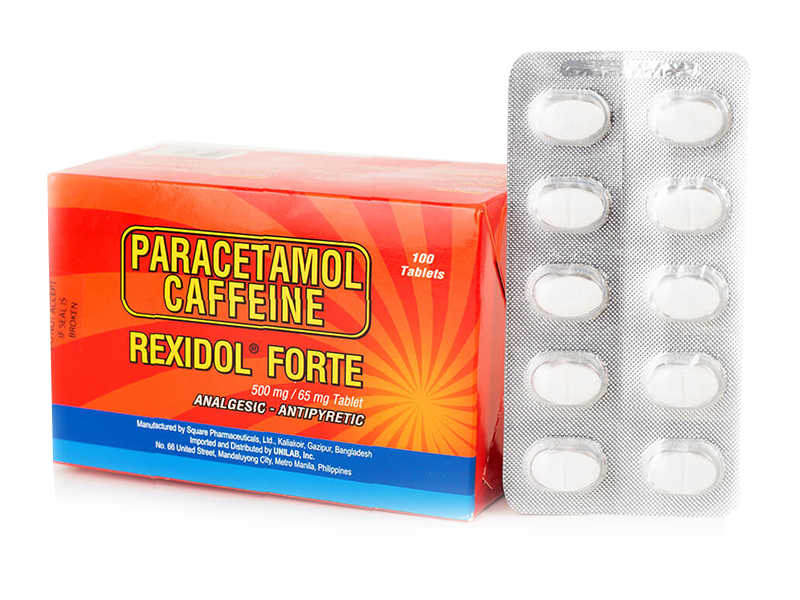

Medicine Guide For Headaches
BIOFLU
Description
💊 Purpose: Relieves headache, fever, and flu symptoms like runny nose and nasal congestion.🔥 Active Ingredients:
Paracetamol (500 mg) – Pain and fever relief.
Chlorphenamine Maleate (2 mg) – Antihistamine for runny nose.
Phenylephrine HCl (10 mg) – Decongestant for nasal relief.
Unilab. (n.d.). Bioflu: Flu symptoms relief & medicine. Unilab Philippines. Retrieved from https://www.unilab.com.ph/products/bioflu
Guide
💊 For Adults and Children (12 years and older):1 tablet every 6 hours as needed.
🚫 Maximum daily dose: 4 tablets (2000 mg of paracetamol).
🧒 For Children (6-11 years):
Not recommended without medical advice.
✅ Usage Tip:
Best taken after meals to avoid stomach irritation.
Do not exceed the recommended dose to prevent liver damage due to paracetamol.

TEMPRA
Description
💊 Purpose: Used to treat headaches, fever, and minor aches.🔥 How it works: Similar to Biogesic, it reduces pain signals by blocking certain chemical messengers.
💡 Common use: Usually recommended for children but also available in adult doses.
Top.org.ph. (n.d.). Tempra: Fever and pain relief medicine. Retrieved from https://top.org.ph/healthcare-equipment/medicines
Guide
💊 Dosage for Adults: 500 mg – 1000 mg every 4-6 hours as needed.🚫 Maximum daily dose: 4000 mg.
🧒 Dosage for Children:
• 2-3 years: 5 mL (160 mg) every 4-6 hours.
• 4-5 years: 7.5 mL (240 mg) every 4-6 hours.
• 6-12 years: 10 mL (320 mg) every 4-6 hours.
✅ Usage Tip: Tempra is often used for pediatric headache or fever relief.
ADVIL
Description
💊 Purpose: Relieves headache, migraine, and muscle pain.🔥 How it works: Reduces inflammation and blocks pain signals by inhibiting COX enzymes.
💡 Common use: Effective for tension headaches and migraines.
Top.org.ph. (n.d.). Advil: Pain relief and anti-inflammatory medicine. Retrieved from https://top.org.ph/medicine-brands-philippines
Guide
💊 Dosage for Adults: 200 mg – 400 mg every 4-6 hours as needed.🚫 Maximum daily dose: 1200 mg (6 tablets of 200 mg) without medical supervision.
🧒 Dosage for Children (6 months – 12 years):
• 5-10 mg/kg body weight every 6-8 hours.
✅ Usage Tip: Take with food or milk to prevent stomach upset.

BIOGESIC
Description
💊 Purpose: Relieves mild to moderate headaches, fever, and body pain.🔥 How it works: Reduces the production of prostaglandins (which cause pain and inflammation), providing quick headache relief.
💡 Common use: Over-the-counter (OTC) pain reliever for general headaches and fever.
Top.org.ph. (n.d.). Biogesic: Paracetamol-based analgesic and antipyretic. Retrieved from https://top.org.ph/medicine-brands-philippines
Guide
💊 Dosage for Adults: 500 mg – 1000 mg every 4-6 hours as needed.🚫 Maximum daily dose: 4000 mg (8 tablets of 500 mg).
🧒 Dosage for Children (6-12 years): 250 mg – 500 mg every 4-6 hours.
✅ Usage Tip: Take with or after food to avoid stomach irritation.
CETIRIZINE
Description
💊 Purpose: Although primarily an antihistamine for allergies, it can relieve headaches caused by sinus pressure or allergic reactions.🔥 How it works: Reduces swelling in the sinus area, which can ease sinus-related headaches.
💡 Common use: Allergy-induced headaches or sinus pain.
MIMS. (n.d.). Alnix tablet: Antihistamine for allergy relief. Retrieved from https://www.mims.com/philippines/drug/info/alnix-tablet?type=full
Guide
💊 Dosage for Adults and Children (12 years and older): 10 mg once daily.🧒 Dosage for Children (6-11 years): 5 mg once daily or 2.5 mg twice daily.
🚫 Maximum daily dose: 10 mg.
✅ Usage Tip: Best taken at night to avoid drowsiness during the day.
BENADRYL AH CAPSULE
Description
💊 Purpose: Mainly used for allergies, but it can also help with mild headaches caused by congestion or allergic reactions.🔥 How it works: Reduces histamine effects, helping with sinus-related headache pressure.
💡 Common use: Headache relief linked to colds or allergies.
Benadryl. (n.d.). Benadryl AH capsule: Antihistamine for allergies. Retrieved from https://www.benadryl.com.ph/products/benadryl-AH-capsule
Guide
💊 Dosage for Adults and Children (12 years and older): 25 mg – 50 mg every 4-6 hours.🚫 Maximum daily dose: 300 mg (6 doses of 50 mg).
🧒 Dosage for Children (6-11 years): 12.5 mg – 25 mg every 4-6 hours.
✅ Usage Tip: Causes drowsiness, so avoid driving or operating machinery.

🔥 How it works:
Paracetamol: Reduces fever and pain.
Caffeine: Enhances pain relief effectiveness.
💡 Common use: For fever, body pain, and muscle aches.
Rexidol. (n.d.). Paracetamol + Caffeine for fever and pain relief. Unilab. Retrieved from https://www.unilab.com.ph
Adults and children (≥12 years): 1–2 tablets every 6 hours.
🚫 Maximum dose: 8 tablets per day.
✅ Usage Tip: Do not double the dose if a dose is missed.
REXIDOL
Description
💊 Purpose: Relieves fever, body pain, and flu symptoms.🔥 How it works:
Paracetamol: Reduces fever and pain.
Caffeine: Enhances pain relief effectiveness.
💡 Common use: For fever, body pain, and muscle aches.
Rexidol. (n.d.). Paracetamol + Caffeine for fever and pain relief. Unilab. Retrieved from https://www.unilab.com.ph
Guide
✅ Dosage:Adults and children (≥12 years): 1–2 tablets every 6 hours.
🚫 Maximum dose: 8 tablets per day.
✅ Usage Tip: Do not double the dose if a dose is missed.